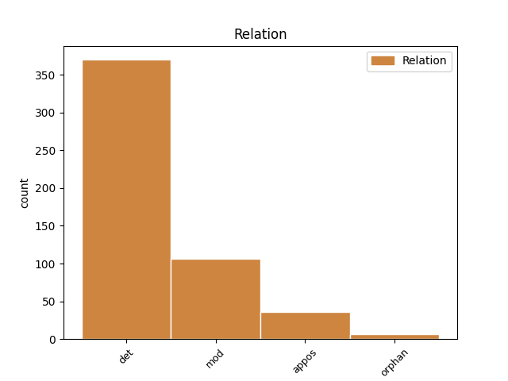
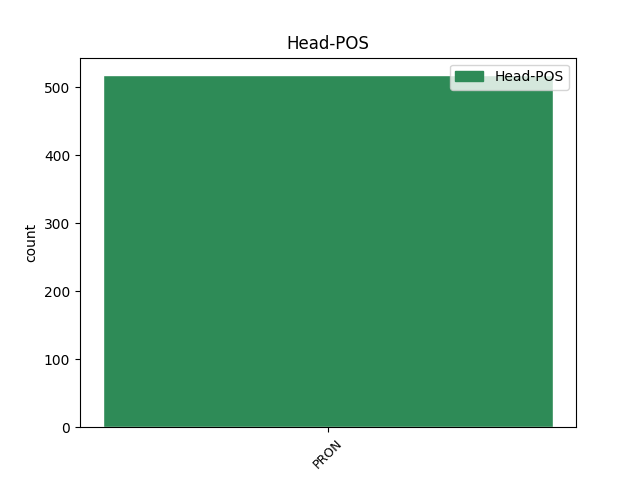
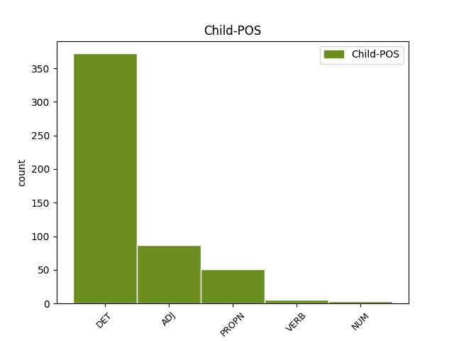

Distribution of features within this leaf



Agreement Rules sorted by frequency.
- When the dependent token is the determiner(det) of the head token, and the head token is PRON and the dependent token is DET.
1 Ceale cel DET Tdfpr Case=Acc,Nom|Gender=Fem|Number=Plur|PronType=Dem 2 det _ ref=COMPLETARE.1
2 ce ce PRON Pw3--r Case=Acc,Nom|Person=3|PronType=Int,Rel 0 _ _ _
3 n- _ _ _ _ 0 _ _ _
4 au _ _ _ _ 0 _ _ _
5 fost _ _ _ _ 0 _ _ _
6 deslușite _ _ _ _ 0 _ _ _
7 întru _ _ _ _ 0 _ _ _
8 această _ _ _ _ 0 _ _ _
9 Pravilă _ _ _ _ 0 _ _ _
10 asupra _ _ _ _ 0 _ _ _
11 clăcașilor _ _ _ _ 0 _ _ _
12 de _ _ _ _ 0 _ _ _
13 pre _ _ _ _ 0 _ _ _
14 moșii _ _ _ _ 0 _ _ _
15 . _ _ _ _ 0 _ _ _
1 Nebunilor _ _ _ _ 0 _ _ _
2 , _ _ _ _ 0 _ _ _
3 nevîrsnecilor _ _ _ _ 0 _ _ _
4 , _ _ _ _ 0 _ _ _
5 robilor _ _ _ _ 0 _ _ _
6 , _ _ _ _ 0 _ _ _
7 răsipitorilor _ _ _ _ 0 _ _ _
8 , _ _ _ _ 0 _ _ _
9 tîlharilor _ _ _ _ 0 _ _ _
10 , _ _ _ _ 0 _ _ _
11 furilor _ _ _ _ 0 _ _ _
12 , _ _ _ _ 0 _ _ _
13 prepunătorilor _ _ _ _ 0 _ _ _
14 , _ _ _ _ 0 _ _ _
15 martorilor _ _ _ _ 0 _ _ _
16 mincinoși _ _ _ _ 0 _ _ _
17 , _ _ _ _ 0 _ _ _
18 tăetorilor _ _ _ _ 0 _ _ _
19 de _ _ _ _ 0 _ _ _
20 bani _ _ _ _ 0 _ _ _
21 , _ _ _ _ 0 _ _ _
22 muflujilor _ _ _ _ 0 _ _ _
23 mincinoși _ _ _ _ 0 _ _ _
24 , _ _ _ _ 0 _ _ _
25 și _ _ _ _ 0 _ _ _
26 cîți _ _ _ _ 0 _ _ _
27 sînt _ _ _ _ 0 _ _ _
28 știuți _ _ _ _ 0 _ _ _
29 că _ _ _ _ 0 _ _ _
30 au _ _ _ _ 0 _ _ _
31 puțină _ _ _ _ 0 _ _ _
32 evlavie _ _ _ _ 0 _ _ _
33 cătră _ _ _ _ 0 _ _ _
34 ceale acela PRON Pd3fpr Case=Acc,Nom|Gender=Fem|Number=Plur|Person=3|PronType=Dem 0 _ _ _
35 Domnezeești Dumnezăiesc ADJ Afpfprn Case=Acc,Nom|Definite=Ind|Degree=Pos|Gender=Fem|Number=Plur 34 mod _ ref=PART_V_CAP_2c.46|SpaceAfter=No
36 , _ _ _ _ 0 _ _ _
37 acestora _ _ _ _ 0 _ _ _
38 nici _ _ _ _ 0 _ _ _
39 li _ _ _ _ 0 _ _ _
40 să _ _ _ _ 0 _ _ _
41 provaliseaște _ _ _ _ 0 _ _ _
42 jurămînt _ _ _ _ 0 _ _ _
43 , _ _ _ _ 0 _ _ _
44 nici _ _ _ _ 0 _ _ _
45 li _ _ _ _ 0 _ _ _
46 să _ _ _ _ 0 _ _ _
47 dă _ _ _ _ 0 _ _ _
48 credință _ _ _ _ 0 _ _ _
49 daca _ _ _ _ 0 _ _ _
50 vor _ _ _ _ 0 _ _ _
51 jura _ _ _ _ 0 _ _ _
52 . _ _ _ _ 0 _ _ _
1 Din _ _ _ _ 0 _ _ _
2 Luminată _ _ _ _ 0 _ _ _
3 poruncă _ _ _ _ 0 _ _ _
4 a _ _ _ _ 0 _ _ _
5 Mării _ _ _ _ 0 _ _ _
6 sale _ _ _ _ 0 _ _ _
7 Prea _ _ _ _ 0 _ _ _
8 Înălțatului _ _ _ _ 0 _ _ _
9 nostru _ _ _ _ 0 _ _ _
10 Domn _ _ _ _ 0 _ _ _
11 Io io PRON Pp3msr Case=Acc,Nom|Gender=Masc|Number=Sing|Person=3|PronType=Prs 0 _ _ _
12 Ioann Ion PROPN Npmsrn Case=Acc,Nom|Definite=Ind|Gender=Masc|Number=Sing 11 appos _ ref=ANAFORA.3
13 Gheorghie _ _ _ _ 0 _ _ _
14 Caragea _ _ _ _ 0 _ _ _
15 , _ _ _ _ 0 _ _ _
16 Vv _ _ _ _ 0 _ _ _
17 . _ _ _ _ 0 _ _ _
1 Cu _ _ _ _ 0 _ _ _
2 toată _ _ _ _ 0 _ _ _
3 cheltuiala _ _ _ _ 0 _ _ _
4 Dumnealor _ _ _ _ 0 _ _ _
5 CONSTANDIN _ _ _ _ 0 _ _ _
6 CARACAŞ _ _ _ _ 0 _ _ _
7 , _ _ _ _ 0 _ _ _
8 dohtor _ _ _ _ 0 _ _ _
9 , _ _ _ _ 0 _ _ _
10 și _ _ _ _ 0 _ _ _
11 Dumnealui _ _ _ _ 0 _ _ _
12 RĂDUCANUL _ _ _ _ 0 _ _ _
13 CLINCEANUL _ _ _ _ 0 _ _ _
14 , _ _ _ _ 0 _ _ _
15 Biv _ _ _ _ 0 _ _ _
16 ~ _ _ _ _ 0 _ _ _
17 Vel _ _ _ _ 0 _ _ _
18 ~ _ _ _ _ 0 _ _ _
19 Stolnic _ _ _ _ 0 _ _ _
20 , _ _ _ _ 0 _ _ _
21 și _ _ _ _ 0 _ _ _
22 Dumnealui dumnealui PRON Pp3msr Case=Acc,Nom|Gender=Masc|Number=Sing|Person=3|PronType=Prs 0 _ _ _
23 DUMITRACHE Dumitrache PROPN Npmsrn Case=Acc,Nom|Definite=Ind|Gender=Masc|Number=Sing 22 mod _ ref=title.2
24 TOPLICEANUL _ _ _ _ 0 _ _ _
25 , _ _ _ _ 0 _ _ _
26 Biv _ _ _ _ 0 _ _ _
27 ~ _ _ _ _ 0 _ _ _
28 Vel _ _ _ _ 0 _ _ _
29 ~ _ _ _ _ 0 _ _ _
30 Sluger _ _ _ _ 0 _ _ _
31 , _ _ _ _ 0 _ _ _
32 Tipărită _ _ _ _ 0 _ _ _
33 în _ _ _ _ 0 _ _ _
34 privileghiata _ _ _ _ 0 _ _ _
35 Tipografie _ _ _ _ 0 _ _ _
36 a _ _ _ _ 0 _ _ _
37 Dumnealor _ _ _ _ 0 _ _ _
38 ut _ _ _ _ 0 _ _ _
39 Cișmeaua _ _ _ _ 0 _ _ _
40 răposatului _ _ _ _ 0 _ _ _
41 întru _ _ _ _ 0 _ _ _
42 fericire _ _ _ _ 0 _ _ _
43 Domn _ _ _ _ 0 _ _ _
44 MAVROGHENI _ _ _ _ 0 _ _ _
45 din _ _ _ _ 0 _ _ _
46 București _ _ _ _ 0 _ _ _
47 , _ _ _ _ 0 _ _ _
48 1818 _ _ _ _ 0 _ _ _
49 . _ _ _ _ 0 _ _ _
1 Şi _ _ _ _ 0 _ _ _
2 fu _ _ _ _ 0 _ _ _
3 cînd _ _ _ _ 0 _ _ _
4 s- _ _ _ _ 0 _ _ _
5 ară _ _ _ _ 0 _ _ _
6 duce _ _ _ _ 0 _ _ _
7 de _ _ _ _ 0 _ _ _
8 la _ _ _ _ 0 _ _ _
9 El _ _ _ _ 0 _ _ _
10 , _ _ _ _ 0 _ _ _
11 zise _ _ _ _ 0 _ _ _
12 Pătru _ _ _ _ 0 _ _ _
13 lui _ _ _ _ 0 _ _ _
14 Iisus _ _ _ _ 0 _ _ _
15 : _ _ _ _ 0 _ _ _
16 Dascale _ _ _ _ 0 _ _ _
17 , _ _ _ _ 0 _ _ _
18 bine _ _ _ _ 0 _ _ _
19 iaste _ _ _ _ 0 _ _ _
20 noao _ _ _ _ 0 _ _ _
21 acicea _ _ _ _ 0 _ _ _
22 a _ _ _ _ 0 _ _ _
23 fi _ _ _ _ 0 _ _ _
24 și _ _ _ _ 0 _ _ _
25 să _ _ _ _ 0 _ _ _
26 facem _ _ _ _ 0 _ _ _
27 trei _ _ _ _ 0 _ _ _
28 sălașă _ _ _ _ 0 _ _ _
29 : _ _ _ _ 0 _ _ _
30 unul _ _ _ _ 0 _ _ _
31 Ție _ _ _ _ 0 _ _ _
32 , _ _ _ _ 0 _ _ _
33 unul _ _ _ _ 0 _ _ _
34 lui _ _ _ _ 0 _ _ _
35 Moisi _ _ _ _ 0 _ _ _
36 și _ _ _ _ 0 _ _ _
37 unul unul PRON Pi3msr Case=Acc,Nom|Gender=Masc|Number=Sing|Person=3|PronType=Ind 0 _ _ _
38 lui _ _ _ _ 0 _ _ _
39 Ilie Ilie PROPN Npmsrn Case=Acc,Nom|Definite=Ind|Gender=Masc|Number=Sing 37 orphan _ ref=LUCA9.33|SpaceAfter=No
40 , _ _ _ _ 0 _ _ _
41 neștiind _ _ _ _ 0 _ _ _
42 ce _ _ _ _ 0 _ _ _
43 grăiaște _ _ _ _ 0 _ _ _
44 . _ _ _ _ 0 _ _ _
1 Că _ _ _ _ 0 _ _ _
2 n- _ _ _ _ 0 _ _ _
3 au _ _ _ _ 0 _ _ _
4 întrat _ _ _ _ 0 _ _ _
5 Hristos _ _ _ _ 0 _ _ _
6 în _ _ _ _ 0 _ _ _
7 sfinție _ _ _ _ 0 _ _ _
8 făcută _ _ _ _ 0 _ _ _
9 cu _ _ _ _ 0 _ _ _
10 mînule _ _ _ _ 0 _ _ _
11 , _ _ _ _ 0 _ _ _
12 carea _ _ _ _ 0 _ _ _
13 ară _ _ _ _ 0 _ _ _
14 fi _ _ _ _ 0 _ _ _
15 pildă _ _ _ _ 0 _ _ _
16 răspunzătoare _ _ _ _ 0 _ _ _
17 ceii acela PRON Pd3fso Case=Dat,Gen|Gender=Fem|Number=Sing|Person=3|PronType=Dem 0 _ _ _
18 adevărate adevăra VERB Vmp--sf-p--o Case=Dat,Gen|Gender=Fem|Number=Sing|Polarity=Pos|VerbForm=Part 17 mod _ ref=PAVEL_EVREI_9.24|SpaceAfter=No
19 , _ _ _ _ 0 _ _ _
20 ce _ _ _ _ 0 _ _ _
21 în _ _ _ _ 0 _ _ _
22 ceriu _ _ _ _ 0 _ _ _
23 să _ _ _ _ 0 _ _ _
24 Să _ _ _ _ 0 _ _ _
25 arate _ _ _ _ 0 _ _ _
26 acmu _ _ _ _ 0 _ _ _
27 feaței _ _ _ _ 0 _ _ _
28 lui _ _ _ _ 0 _ _ _
29 Dumnezău _ _ _ _ 0 _ _ _
30 , _ _ _ _ 0 _ _ _
31 pentru _ _ _ _ 0 _ _ _
32 noi _ _ _ _ 0 _ _ _
33 . _ _ _ _ 0 _ _ _
1 Adecă _ _ _ _ 0 _ _ _
2 unul _ _ _ _ 0 _ _ _
3 l- _ _ _ _ 0 _ _ _
4 au _ _ _ _ 0 _ _ _
5 împrumutat _ _ _ _ 0 _ _ _
6 zece _ _ _ _ 0 _ _ _
7 mii _ _ _ _ 0 _ _ _
8 , _ _ _ _ 0 _ _ _
9 celalalt _ _ _ _ 0 _ _ _
10 cinci _ _ _ _ 0 _ _ _
11 , _ _ _ _ 0 _ _ _
12 să _ _ _ _ 0 _ _ _
13 ia _ _ _ _ 0 _ _ _
14 acel _ _ _ _ 0 _ _ _
15 cu _ _ _ _ 0 _ _ _
16 zece _ _ _ _ 0 _ _ _
17 mii _ _ _ _ 0 _ _ _
18 douo _ _ _ _ 0 _ _ _
19 părți _ _ _ _ 0 _ _ _
20 , _ _ _ _ 0 _ _ _
21 și _ _ _ _ 0 _ _ _
22 celalalt celălalt PRON Pd3msr Case=Acc,Nom|Gender=Masc|Number=Sing|Person=3|PronType=Dem 0 _ _ _
23 una unu NUM Mcfsrln Case=Acc,Nom|Definite=Ind|Gender=Fem|Number=Sing|NumForm=Word|NumType=Card 22 mod _ ref=PART_III_CAP_11.5b|SpaceAfter=No
24 , _ _ _ _ 0 _ _ _
25 căci _ _ _ _ 0 _ _ _
26 fiind _ _ _ _ 0 _ _ _
27 și _ _ _ _ 0 _ _ _
28 cele _ _ _ _ 0 _ _ _
29 zeace _ _ _ _ 0 _ _ _
30 mii _ _ _ _ 0 _ _ _
31 , _ _ _ _ 0 _ _ _
32 și _ _ _ _ 0 _ _ _
33 cele _ _ _ _ 0 _ _ _
34 cinci _ _ _ _ 0 _ _ _
35 , _ _ _ _ 0 _ _ _
36 tot _ _ _ _ 0 _ _ _
37 împrumutate _ _ _ _ 0 _ _ _
38 pre _ _ _ _ 0 _ _ _
39 tot _ _ _ _ 0 _ _ _
40 zălogul _ _ _ _ 0 _ _ _
41 , _ _ _ _ 0 _ _ _
42 să _ _ _ _ 0 _ _ _
43 cuvine _ _ _ _ 0 _ _ _
44 tot _ _ _ _ 0 _ _ _
45 deopotrivă _ _ _ _ 0 _ _ _
46 pagubă _ _ _ _ 0 _ _ _
47 să _ _ _ _ 0 _ _ _
48 cerce _ _ _ _ 0 _ _ _
49 , _ _ _ _ 0 _ _ _
50 pentru _ _ _ _ 0 _ _ _
51 că _ _ _ _ 0 _ _ _
52 de _ _ _ _ 0 _ _ _
53 vor _ _ _ _ 0 _ _ _
54 lua _ _ _ _ 0 _ _ _
55 pre _ _ _ _ 0 _ _ _
56 jumătate _ _ _ _ 0 _ _ _
57 , _ _ _ _ 0 _ _ _
58 cele _ _ _ _ 0 _ _ _
59 zeace _ _ _ _ 0 _ _ _
60 mii _ _ _ _ 0 _ _ _
61 cearcă _ _ _ _ 0 _ _ _
62 mai _ _ _ _ 0 _ _ _
63 multă _ _ _ _ 0 _ _ _
64 pagubă _ _ _ _ 0 _ _ _
65 , _ _ _ _ 0 _ _ _
66 și _ _ _ _ 0 _ _ _
67 cele _ _ _ _ 0 _ _ _
68 cinci _ _ _ _ 0 _ _ _
69 mai _ _ _ _ 0 _ _ _
70 puțină _ _ _ _ 0 _ _ _
71 . _ _ _ _ 0 _ _ _
1 În _ _ _ _ 0 _ _ _
2 scurt _ _ _ _ 0 _ _ _
3 care care PRON Pw3--r Case=Acc,Nom|Person=3|PronType=Int,Rel 0 _ _ _
4 dintre _ _ _ _ 0 _ _ _
5 cei _ _ _ _ 0 _ _ _
6 ce _ _ _ _ 0 _ _ _
7 să _ _ _ _ 0 _ _ _
8 judecă _ _ _ _ 0 _ _ _
9 să _ _ _ _ 0 _ _ _
10 va _ _ _ _ 0 _ _ _
11 dovedi _ _ _ _ 0 _ _ _
12 că _ _ _ _ 0 _ _ _
13 fiindcă _ _ _ _ 0 _ _ _
14 era _ _ _ _ 0 _ _ _
15 datoriu _ _ _ _ 0 _ _ _
16 , _ _ _ _ 0 _ _ _
17 și _ _ _ _ 0 _ _ _
18 cît _ _ _ _ 0 _ _ _
19 era _ _ _ _ 0 _ _ _
20 datoriu _ _ _ _ 0 _ _ _
21 protivnicului _ _ _ _ 0 _ _ _
22 său _ _ _ _ 0 _ _ _
23 , _ _ _ _ 0 _ _ _
24 nu _ _ _ _ 0 _ _ _
25 i- _ _ _ _ 0 _ _ _
26 au _ _ _ _ 0 _ _ _
27 făcut _ _ _ _ 0 _ _ _
28 îndestulare _ _ _ _ 0 _ _ _
29 , _ _ _ _ 0 _ _ _
30 acela acela DET Dd3msr---o Case=Acc,Nom|Gender=Masc|Number=Sing|Person=3|Position=Postnom|PronType=Dem 3 appos _ ref=PART_V_CAP_3.11
31 să _ _ _ _ 0 _ _ _
32 să _ _ _ _ 0 _ _ _
33 îndatoreze _ _ _ _ 0 _ _ _
34 să _ _ _ _ 0 _ _ _
35 -i _ _ _ _ 0 _ _ _
36 plătească _ _ _ _ 0 _ _ _
37 și _ _ _ _ 0 _ _ _
38 cheltuiala _ _ _ _ 0 _ _ _
39 judecății _ _ _ _ 0 _ _ _
40 . _ _ _ _ 0 _ _ _
Disagree Examples:
1 Carea _ _ _ _ 0 _ _ _
2 văzînd _ _ _ _ 0 _ _ _
3 Iisus _ _ _ _ 0 _ _ _
4 , _ _ _ _ 0 _ _ _
5 nu _ _ _ _ 0 _ _ _
6 -i _ _ _ _ 0 _ _ _
7 păru _ _ _ _ 0 _ _ _
8 bine _ _ _ _ 0 _ _ _
9 și _ _ _ _ 0 _ _ _
10 zise _ _ _ _ 0 _ _ _
11 lor _ _ _ _ 0 _ _ _
12 : _ _ _ _ 0 _ _ _
13 Lăsați _ _ _ _ 0 _ _ _
14 porobocii _ _ _ _ 0 _ _ _
15 să _ _ _ _ 0 _ _ _
16 vie _ _ _ _ 0 _ _ _
17 la _ _ _ _ 0 _ _ _
18 mine _ _ _ _ 0 _ _ _
19 , _ _ _ _ 0 _ _ _
20 și _ _ _ _ 0 _ _ _
21 nu _ _ _ _ 0 _ _ _
22 oprireați _ _ _ _ 0 _ _ _
23 pre _ _ _ _ 0 _ _ _
24 ei _ _ _ _ 0 _ _ _
25 , _ _ _ _ 0 _ _ _
26 că _ _ _ _ 0 _ _ _
27 a al DET Tsfsr Case=Acc,Nom|Gender=Fem|Number=Sing|Poss=Yes|PronType=Art 28 det _ ref=MARC10.14
28 unora unul PRON Pi3-po Case=Dat,Gen|Number=Plur|Person=3|PronType=Ind 0 _ _ _
29 ca _ _ _ _ 0 _ _ _
30 acestora _ _ _ _ 0 _ _ _
31 iaste _ _ _ _ 0 _ _ _
32 Împărățiia _ _ _ _ 0 _ _ _
33 lui _ _ _ _ 0 _ _ _
34 Dumnezău _ _ _ _ 0 _ _ _
35 . _ _ _ _ 0 _ _ _
1 Atunci _ _ _ _ 0 _ _ _
2 zisă _ _ _ _ 0 _ _ _
3 lor _ _ _ _ 0 _ _ _
4 : _ _ _ _ 0 _ _ _
5 A al DET Tsfsr Case=Acc,Nom|Gender=Fem|Number=Sing|Poss=Yes|PronType=Art 6 det _ ref=MARC12.16
6 cui cine PRON Pw3-so Case=Dat,Gen|Number=Sing|Person=3|PronType=Int,Rel 0 _ _ _
7 chip _ _ _ _ 0 _ _ _
8 iaste _ _ _ _ 0 _ _ _
9 acesta _ _ _ _ 0 _ _ _
10 și _ _ _ _ 0 _ _ _
11 scriptura _ _ _ _ 0 _ _ _
12 ? _ _ _ _ 0 _ _ _
1 Dară _ _ _ _ 0 _ _ _
2 la _ _ _ _ 0 _ _ _
3 înviere _ _ _ _ 0 _ _ _
4 , _ _ _ _ 0 _ _ _
5 cînd _ _ _ _ 0 _ _ _
6 vor _ _ _ _ 0 _ _ _
7 învie _ _ _ _ 0 _ _ _
8 , _ _ _ _ 0 _ _ _
9 a al DET Tsfsr Case=Acc,Nom|Gender=Fem|Number=Sing|Poss=Yes|PronType=Art 10 det _ ref=MARC12.23
10 căruia care PRON Pw3mso Case=Dat,Gen|Gender=Masc|Number=Sing|Person=3|PronType=Int,Rel 0 _ _ _
11 de _ _ _ _ 0 _ _ _
12 ei _ _ _ _ 0 _ _ _
13 va _ _ _ _ 0 _ _ _
14 fi _ _ _ _ 0 _ _ _
15 muiarea _ _ _ _ 0 _ _ _
16 ? _ _ _ _ 0 _ _ _
1 Iară _ _ _ _ 0 _ _ _
2 ei el PRON Pp3mpr Case=Nom|Gender=Masc|Number=Plur|Person=3|PronType=Prs 0 _ _ _
3 toți tot DET Di3mpr Case=Acc,Nom|Gender=Masc|Number=Plur|Person=3|PronType=Ind 2 det _ ref=MARC14.64
4 giudecară _ _ _ _ 0 _ _ _
5 pre _ _ _ _ 0 _ _ _
6 El _ _ _ _ 0 _ _ _
7 a _ _ _ _ 0 _ _ _
8 fi _ _ _ _ 0 _ _ _
9 vinovat _ _ _ _ 0 _ _ _
10 morției _ _ _ _ 0 _ _ _
11 . _ _ _ _ 0 _ _ _
1 Chemînd _ _ _ _ 0 _ _ _
2 pre _ _ _ _ 0 _ _ _
3 cei _ _ _ _ 0 _ _ _
4 doisprăzeace _ _ _ _ 0 _ _ _
5 ucenici _ _ _ _ 0 _ _ _
6 ai al DET Tdmpr Case=Acc,Nom|Gender=Masc|Number=Plur|PronType=Dem 7 det _ ref=LUCA9.1
7 Lui el PRON Pp3mso Case=Gen|Gender=Masc|Number=Sing|Person=3|PronType=Prs 0 _ _ _
8 , _ _ _ _ 0 _ _ _
9 deade _ _ _ _ 0 _ _ _
10 lor _ _ _ _ 0 _ _ _
11 puteare _ _ _ _ 0 _ _ _
12 și _ _ _ _ 0 _ _ _
13 vîrtute _ _ _ _ 0 _ _ _
14 spre _ _ _ _ 0 _ _ _
15 toți _ _ _ _ 0 _ _ _
16 dracii _ _ _ _ 0 _ _ _
17 , _ _ _ _ 0 _ _ _
18 și _ _ _ _ 0 _ _ _
19 boalele _ _ _ _ 0 _ _ _
20 să _ _ _ _ 0 _ _ _
21 vindece _ _ _ _ 0 _ _ _
22 . _ _ _ _ 0 _ _ _